A well-fed herd at the feed bunk — nutrition is the foundation of milk production
Feed is the largest cost on a dairy farm — and the biggest opportunity. A cow can only produce as much milk as her ration allows, and feeding mistakes show up quickly as low milk yield, poor fertility, metabolic disease and lost body condition. Good feeding is not about the most expensive feed: it is about giving the right nutrients, in the right balance, at the right stage of lactation, every single day.
This guide explains the nutrient requirements of dairy cattle, dry matter intake, feeding by lactation stage, the balance of energy, protein and fibre, the importance of water, bunk management, body condition scoring and the common feeding mistakes every farmer should avoid. The values given follow the standard recommendations of the National Research Council (NRC) Nutrient Requirements of Dairy Cattle and university extension guidance.
Nutrient Requirements — Energy, Protein, Fibre and Water
A dairy cow needs six groups of nutrients: energy, protein, fibre, minerals, vitamins and water. Each one has a job, and a shortage of any one limits milk production, no matter how good the rest of the ration is.
1
Energy(The fuel for milk production, maintenance, growth and reproduction. Measured as net energy for lactation, NEL. High-yielding cows need an energy-dense ration — around 1.6–1.7 Mcal NEL per kg of dry matter)
2
Protein(Builds milk protein, muscle and the growing calf. High-yielding cows in early lactation generally need about 16–18% crude protein on a dry-matter basis, with a balance of rumen-degradable and rumen-undegradable protein)
3
Fibre(Keeps the rumen working. A minimum of about 28–30% neutral detergent fibre (NDF) in the ration dry matter is commonly recommended for lactating cows, with enough long, physically effective fibre from forage)
4
Minerals(Calcium and phosphorus for milk and bones, plus sodium, potassium, magnesium and trace minerals such as copper, zinc, selenium and iodine. Mineral needs rise sharply at calving and in early lactation)
5
Vitamins(Vitamins A, D and E are the most important for dairy cattle. Vitamin D supports calcium absorption, and vitamin E supports immunity — both are especially important around calving)
6
Water(The most important nutrient of all — milk is about 87% water. A lactating cow commonly drinks 80–150 litres of clean water per day)
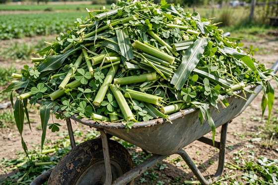
Green fodder — the base of the dairy ration
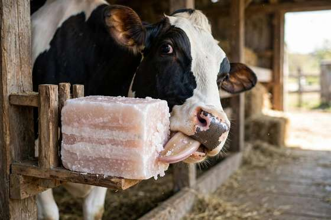
Mineral supplementation — never skip the salt block
Requirements change with body weight, milk yield, stage of lactation and pregnancy. A ration balanced for a cow giving 10 litres a day will starve a cow giving 30 litres — so rations must be matched to the animal, not the herd average.
Dry Matter Intake and What Affects It
Dry matter intake (DMI) is the amount of feed a cow eats after the water is removed — it is the true measure of how much she is eating. A lactating dairy cow typically eats about 3 to 4 percent of her body weight as dry matter each day. A 600 kg cow producing 25 litres of milk may eat around 20 to 24 kg of dry matter daily.
Intake is lowest around calving and rises gradually after calving, reaching its peak several weeks after peak milk yield. This gap is why early-lactation cows lose body condition — they simply cannot eat enough to cover the energy going into the milk. Everything in feeding management aims to close that gap.
Factors that reduce dry matter intake:
Heat stress — intake falls sharply in hot weather
Poor-quality, mouldy or unpalatable feed
Too little bunk space or overcrowding at feeding
Sudden ration changes without a transition period
Illness, lameness or pain
Dirty, warm or hard-to-reach drinking water
Overly wet or overly dry rations
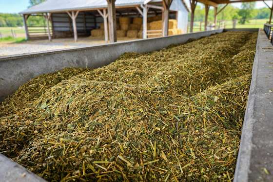
Fresh, palatable feed in a clean bunk — the first step to good intake
Watch the bunk: if cows leave large amounts of feed uneaten, or if intake drops suddenly, something is wrong — check feed quality, water supply, heat stress and cow health before changing the ration.
Feeding by Lactation Stage
A cow's needs change completely through the lactation cycle. Feeding every cow the same ration wastes feed on some and starves others. Group cows by stage and feed each group for its own needs.
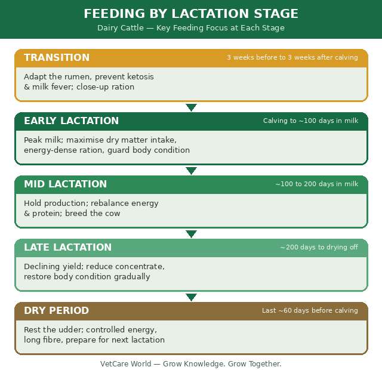
Feeding focus changes at every stage of the lactation cycle
Stage
Period
Feeding focus
Target body condition (BCS 1–5)
Transition
3 weeks before to 3 weeks after calving
Adapt the rumen to the lactation diet with a close-up ration; prevent ketosis and milk fever; monitor intake daily
3.0–3.5 at calving
Early lactation
Calving to ~100 days in milk
Peak milk — maximise dry matter intake with an energy-dense ration; guard against excessive body condition loss
Not below 2.5
Mid lactation
~100 to 200 days in milk
Hold production; rebalance energy and protein as yield falls; breed the cow — good feeding supports fertility
2.75–3.25
Late lactation
~200 days to drying off
Declining yield — reduce concentrate gradually; restore body condition slowly without over-fattening
3.0–3.5 at dry-off
Dry period
Last ~60 days before calving
Rest the udder; controlled energy and good-quality long fibre; avoid over-conditioning; prepare for the next lactation
3.0–3.5
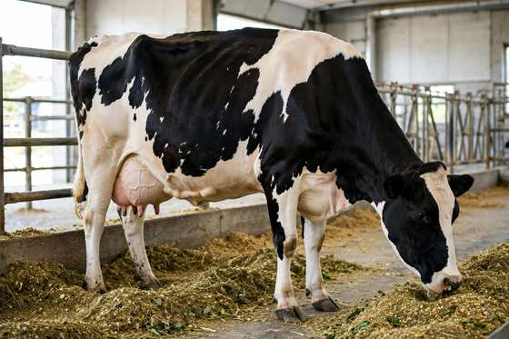
Early lactation — peak milk, highest nutrient demand
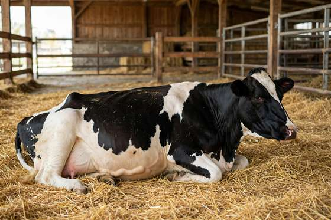
Dry period — rest, controlled energy and long fibre
The transition period is the most critical 6 weeks in a cow's year. Most metabolic diseases — ketosis, milk fever, retained placenta and displaced abomasum — begin here. Careful transition feeding, with a close-up ration in the last 3 weeks before calving and close monitoring after calving, prevents far more disease than any treatment. See also our guide on Ketosis in Cattle.
Energy, Protein and Fibre Balance
A ration is balanced when energy, protein and fibre work together — not when any one of them is simply high. Too much concentrate without enough fibre causes rumen acidosis: the rumen pH falls, the cow goes off feed, milk fat drops, and laminitis and displaced abomasum follow. Too much fibre without enough energy leaves the cow short of milk and losing condition.
Energy first: milk yield is usually limited by energy, not protein. Grains, maize silage and good-quality forage supply energy — see our guide on Silage: Formulation, Preparation & Feeding.
Protein matched to energy: protein is wasted if energy is short, because rumen microbes need energy to use it. Balance both together.
Fibre for rumen health: keep at least 28–30% NDF in the ration dry matter, with enough long particles to make the cow chew and ruminate. Chewing produces saliva, and saliva buffers the rumen.
Change feeds gradually: introduce any new feed or concentrate over 7–10 days so the rumen microbes can adjust. Sudden changes are a leading cause of acidosis and bloat.
Feed as a total mixed ration (TMR) where possible: mixing forage and concentrate together stops cows from sorting out the tasty grains and leaving the fibre behind.
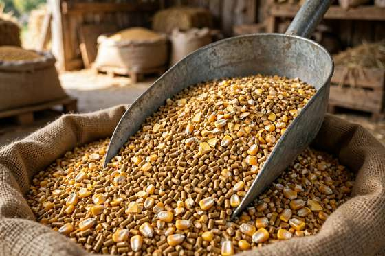
Concentrate supplies energy and protein — but only in balance with fibre
Water — The Forgotten Nutrient
Water is the cheapest nutrient and the easiest to neglect. Milk is about 87% water, and a cow that cannot drink enough cannot produce milk — a shortfall in water shows up as a fall in yield within hours. A lactating cow commonly drinks 80 to 150 litres per day: roughly 3 to 5 litres of water for every litre of milk produced, plus water for maintenance.
Provide clean, fresh water at all times — 24 hours a day, not only at feeding times
Place water troughs close to the feed bunk and the milking parlour, where cows drink most
Clean troughs regularly — cows refuse dirty, algae-covered water
Allow enough trough space so shy cows are not pushed away by dominant ones
In hot weather, water needs rise sharply — check supply and trough capacity in summer
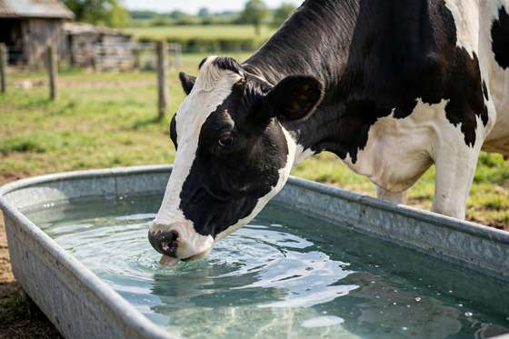
Clean water, always available — the cheapest way to protect milk yield
Feeding Frequency and Bunk Management
How feed is delivered matters as much as what is in it. Cows eat in meals through the day, and stale, heated or sorted feed is feed wasted.
1
Feed at least twice a day(Three times a day is better on larger farms — fresh feed encourages steady eating and a stable rumen)
2
Push feed up several times a day(Cows push feed out of reach as they eat — push it back toward them so the bunk is never empty)
3
Give every cow enough bunk space(Around 60–75 cm per cow at the bunk; overcrowding means shy and young cows eat less)
4
Remove refused feed daily(Old feed heats, ferments and goes mouldy — clean the bunk before fresh feed goes in)
5
Feed at the same times every day(Cows are creatures of habit — a regular routine keeps intake steady and the rumen stable)
6
Keep the feeding area clean and dry(Mud, manure and standing water around the bunk cut intake and spread disease)
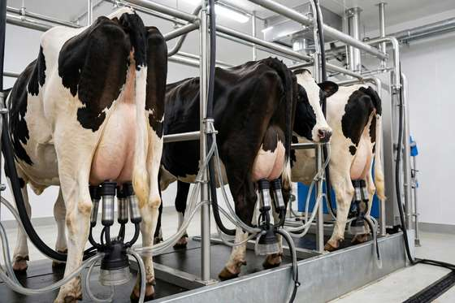
Good feeding shows in the parlour — steady yield, healthy cows
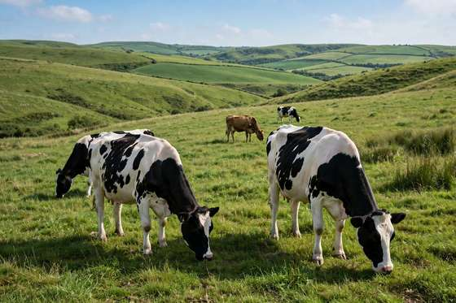
Pasture grazing — manage grass quality and supplement as needed
Body Condition Scoring (BCS 1–5)
Body condition scoring is a simple hands-on method of judging a cow's fat reserves on a 1 to 5 scale, by looking at and feeling the backbone, ribs, hips and tail head. It tells you whether your feeding is working — before milk yield or fertility shows the problem.
BCS score
What it means
Action
1 — Very thin
Backbone, ribs and hip bones sharp and clearly visible; no fat cover
Urgent — increase energy intake, check for disease and parasites
2 — Thin
Bones easily seen and felt; little fat cover
Increase energy; review ration and health
3 — Moderate
Ribs felt with light pressure; backbone and hips smooth, not sharp
Ideal for most stages — maintain
4 — Fat
Ribs hard to feel; backbone buried; hips rounded
Reduce energy; avoid further fattening before calving
5 — Very fat / obese
Bones cannot be felt; heavy fat deposits around tail head and brisket
High risk of calving and metabolic problems — manage energy carefully with veterinary advice
Target scores: cows should calve at BCS 3.0–3.5, should not fall below 2.5 in early lactation, and should be back to 3.0–3.5 at dry-off. Score cows at calving, at breeding, at dry-off and at least once mid-lactation — and record the scores so changes are visible over time.
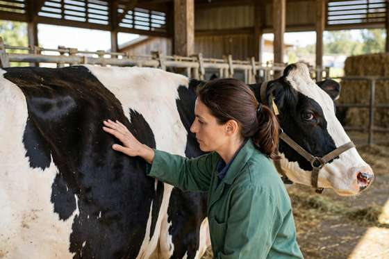
Body condition scoring — hands-on, simple, and the best early warning of feeding problems
Common Feeding Mistakes and How to Avoid Them
1
Feeding every cow the same ration(A fresh cow and a dry cow have completely different needs — group by lactation stage and feed each group separately)
2
Changing feeds suddenly(Always transition over 7–10 days — sudden changes cause acidosis, bloat and off-feed cows)
3
Too much concentrate, too little fibre(Keep at least 28–30% NDF in the ration; long fibre is essential for rumen health)
4
Feeding mouldy or spoiled feed(Never feed visibly mouldy silage, hay or concentrate — mycotoxins damage health and fertility)
5
Forgetting water(Dirty troughs, too few troughs or troughs too far away cut intake and milk yield within hours)
6
Over-fattening dry cows(Fat cows at calving are at high risk of milk fever, ketosis and difficult calving — keep dry cows at BCS 3.0–3.5)
7
Skipping minerals and vitamins(Mineral deficiency is invisible until it causes disease — supplement minerals and vitamins as part of the ration)
8
Never weighing or testing feed(Guessing quantities means guessing the ration — weigh feeds and test forage quality when possible)
🐄 Golden rule:
Feed by stage, not by habit.
Change feeds slowly — 7 to 10 days.
Keep water clean and always available.
Score body condition regularly and record it.
When in doubt, ask your veterinarian or a qualified animal nutritionist.
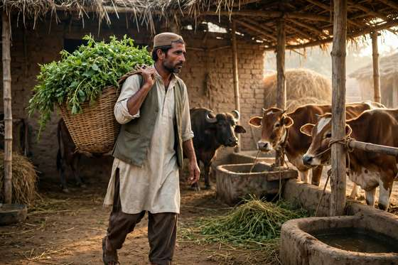
Good feeding is daily care — fresh fodder, clean water and attention to every cow
Conclusion
Dairy cattle feeding is the foundation of profitable milk production. Match the ration to the cow's stage of lactation, balance energy, protein and fibre, keep clean water available at all times, manage the bunk well, and watch body condition as your early-warning system. Small daily improvements in feeding — fresh feed, clean water, gradual changes — add up to healthier cows, more milk and fewer veterinary problems. For ration formulation and herd-specific advice, consult your veterinarian or a qualified animal nutritionist.
References
National Research Council (NRC) – Nutrient Requirements of Dairy Cattle, 8th Revised Edition (2021), National Academies Press.
Merck Veterinary Manual – Nutritional Requirements of Dairy Cattle.
Penn State Extension – Dairy Cattle Nutrition and Feeding Management.
University of Wisconsin–Madison Extension – Body Condition Scoring of Dairy Cattle.
FAO – Feeding Dairy Cattle and Buffaloes: A Practical Guide for Smallholder Farmers.
Frequently Asked Questions
How much dry matter does a lactating dairy cow eat each day?
A lactating dairy cow typically eats about 3 to 4 percent of her body weight as dry matter each day, depending on milk yield, stage of lactation, body weight and feed quality. A 600 kg cow producing 25 litres of milk may eat around 20 to 24 kg of dry matter daily. Intake is lowest around calving and rises gradually, reaching its peak several weeks after peak milk yield.
What is the ideal crude protein level for a high-yielding dairy cow?
High-yielding dairy cows in early lactation generally need a ration containing about 16 to 18 percent crude protein on a dry-matter basis. The exact level depends on milk yield, the quality of the protein sources and the balance between rumen-degradable and rumen-undegradable protein. Overfeeding protein wastes money and increases nitrogen excretion, so rations should be balanced by a nutritionist or veterinarian.
Why is fibre so important in a dairy cow's ration?
Fibre, measured as neutral detergent fibre (NDF), stimulates chewing and rumination, which produces saliva that buffers the rumen and keeps its pH stable. A minimum of about 28 to 30 percent NDF in the ration dry matter is commonly recommended for lactating cows, with enough physically effective fibre from long forage. Too little fibre leads to rumen acidosis, low milk fat, laminitis and displaced abomasum.
What is the transition period, and why does feeding matter most then?
The transition period covers about three weeks before calving to three weeks after calving. During this time the cow's energy demand rises sharply while her feed intake falls, putting her at risk of ketosis, milk fever, retained placenta and displaced abomasum. Careful feeding, including a close-up ration that adapts the rumen to the lactation diet, controlled energy before calving and close monitoring after calving, greatly reduces these risks.
How much water does a dairy cow need per day?
A lactating dairy cow commonly drinks 80 to 150 litres of clean water per day, depending on milk yield, temperature and the dry matter content of the feed. As a general rule, a cow needs about 3 to 5 litres of water for every litre of milk she produces, plus water for maintenance. Water intake drops quickly if the water is dirty, warm or hard to reach, and milk yield falls with it.
Can I feed only green fodder to my milking cows?
No. Green fodder alone cannot meet the energy and protein needs of a milking cow, especially a high-yielding one. A milking cow also needs concentrate feed, good-quality silage or hay, minerals and vitamins, and clean water at all times. Feed the ration in a balanced way and change feeds gradually over 7 to 10 days so the rumen can adjust.
How many times a day should I feed my cows?
Feed lactating cows at least twice a day, and three times a day is better on larger farms, so fresh feed is always available and the cows eat steadily through the day. Push feed up toward the cows several times a day, keep the bunk clean, remove refused feed daily, and make sure every cow has enough bunk space to eat without being pushed away.
دودھ دینے والی گائے کو دن میں کتنا چارہ اور پانی دینا چاہیے؟
دودھ دینے والی گائے روزانہ اپنے جسمانی وزن کا تقریباً تین سے چار فیصد خشک مادہ (ڈرائی میٹر) کھاتی ہے، یعنی تقریباً بیس سے چوبیس کلو گرام۔ اسے سبز چارہ، سائیلج، ونڈا اور معدنیات کا متوازن راشن دیں اور دن میں کم از کم دو بار تازہ چارہ ڈالیں۔ پانی ہر وقت صاف اور وافر مقدار میں دستیاب ہونا چاہیے — دودھ دینے والی گائے روزانہ اسی سے ڈیڑھ سو لیٹر تک پانی پی سکتی ہے۔
Key Takeaway
Feed by lactation stage, balance energy, protein and fibre, keep clean water available at all times, and watch body condition as your early warning — small daily feeding habits are what turn good cows into profitable cows. Follow current local veterinary authority guidance and feed supplier instructions.